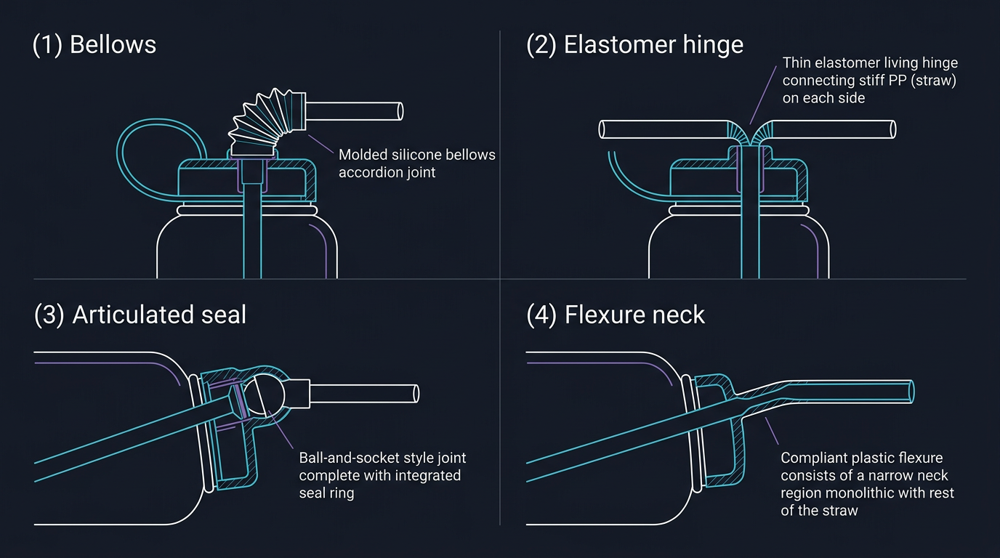

Short-span silicone joint on cut rigid straw (primary concept)
Two rigid drink-path segments (for example an OEM straw cut once) sit inside a
generous silicone sock for grip and
retention, with a modest gap between
the plastic ends so assembly is forgiving. The sock overlap is large; the hollow span between PP
faces stays short so sip suction still does not see a long soft cavity. Optional slits thin one
side for bend. The animation below is kinematic only; this diagram is the hardware story we want
reviewers to remember first.
Read this as: the silicone sock is intentionally large for
retention, feel, and manufacturing tolerance, while the rigid stubs stop short of each
other with a modest gap inside. You get assembly slack and side-wall compliance without
a tall empty soft tunnel. The board below shows other joint families for brainstorming; they are
not the primary adapter story.

Broader reference palette (illustrative): bellows, living hinge, sealed ball
joint, monolithic flexure neck. Labels are not binding; ME still picks materials for wash,
creep, and lid-stack interference. See also
design-notes/ShortSpanSiliconeJointRigidStrawSegmentsAdaptationAndOffTheShelfOptions.md.
Gravity-hinged straw · concept animation
Symmetric 64 oz–style cylinder in side view, flip straw on top of the lid. Total molded straw
length comes from the cap pivot to a tip target above the inner floor; the tip standoff slider
moves that target. Teal and violet pendulum segments keep that length and pivot against the
cavity wall by changing angle, not by shrinking the tube. The coral fixed straw still shortens
along its rigid axis when the shoulder blocks the full run (no hinge). The hybrid hinge slider
moves the flex joint as a fraction of total length on the violet panel.
Flex at cap · full dip tube on gravity
Fixed straw · rigid with the lid
Mid-straw flex · upper rigid, lower on gravity
Read this as a story, not a lab measurement:
All three panels share tilt and fill. The cavity shows a lighter band above the bright white
line (air) and deeper blue below (water). Teal: hinge under the cap. Coral: no hinge, straw
locked to the bottle axis. Violet: rigid upper half with the bottle, silicone flex at the
adjustable hinge, lower half pendulum toward gravity. Teal and violet rods keep fixed molded
length: when the cavity blocks the pendulum, the angle shifts against the wall instead of
shortening the tube. Tip standoff and hinge position are sliders. This is
2D canvas for a quick concept, not CFD or CAD.